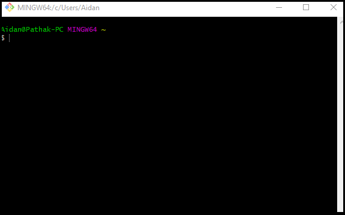
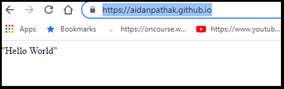
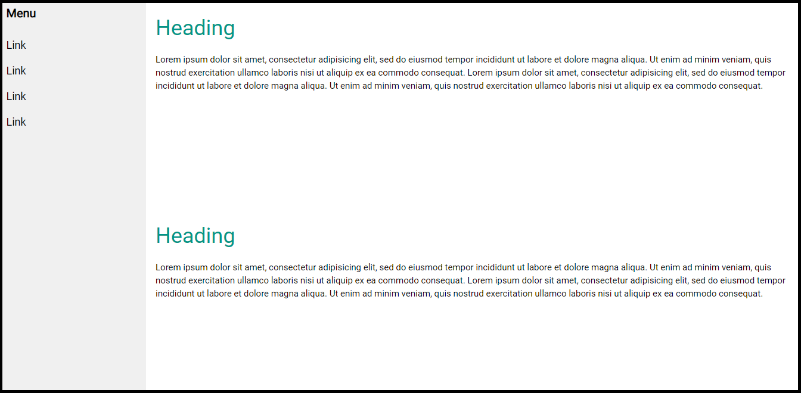
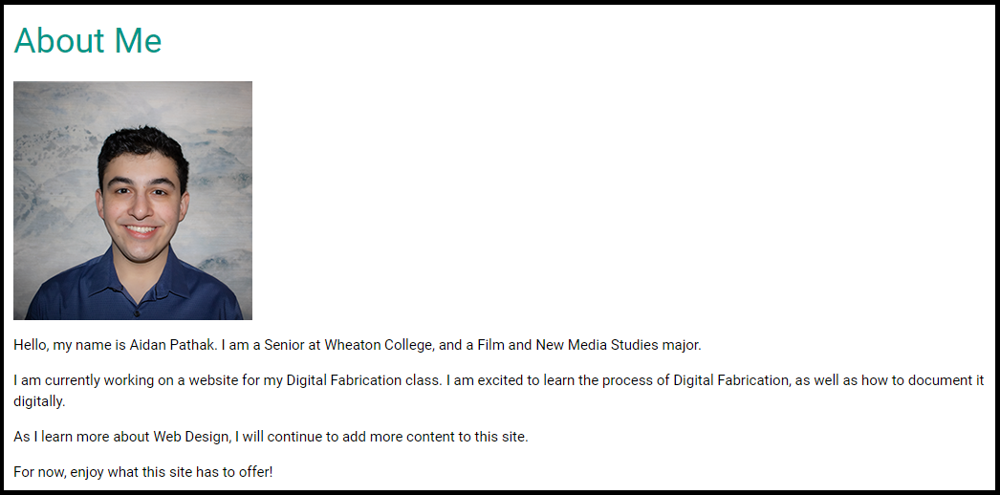
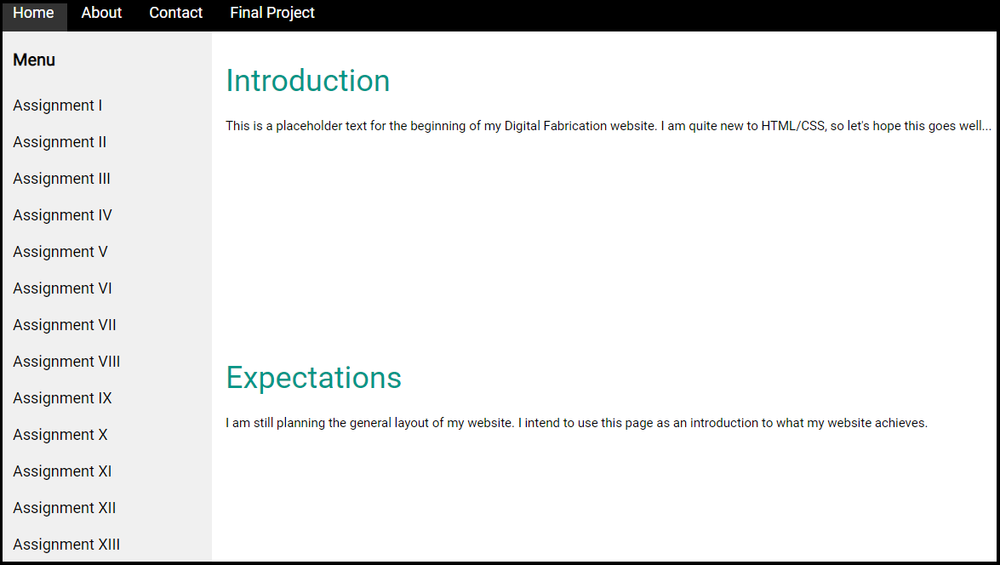

Well, here it is! Week one of Digital Fabrication!!!
This week's assignment was quite new and challenging, so please bear with me as I document what I have learned.
I will start with the terminal, since it opened up a plethora of opportunities for this class.
Being a Windows user, I encountered some irritating differences in setting up my website.

I was able to find the GitBash terminal with relative ease. However, soon after I began encountering issues.
After watching the module's tutorial steps, I successfully created a folder to hold all of my website's files in.
However, I had some issues with connecting my folder to the GitHub website.
Luckily for me, Tuna (the class TA) set up a video conference and walked me through the issues I encountered.
(Shoutout to Tuna for saving me much anxiety!)
Following the video tutorials, I was able to get a basic web page up and running!

Still, considerable work lays ahead.
From there, I learned the Visual Studio Code layout and became more familiar with the software.
I quickly learned how to stage any changes made to my code and commit said changes.
With staging under my grasp, I worked with Tuna to learn the difference between pushing, pulling, and cloning.
Essentially, all of these features allow users to manage different versions of their code.
Cloning, as the name would suggest, allows users to copy their repository and install it in a new location. Not the hardest concept to grasp, but still incredibly useful to know!
Pulling enables the user to copy an older version of the code and integrate it into the repository. This is extremely useful for debugging, as it allows older versions of code to be 'pulled' from the repository to fix any errors due to new changes.
Pushing, on the other hand, allows the user to update the repository with new code. It essentially updates the repository remotely with new changes.
Using these helpful features, I began grasping what exactly Git is. To summarize (poorly), it provides web designers an interface to track and stage changes made to the code, without completely overriding previous iterations of the code. From there, users can push, pull, or clone their repositories to complete their final product.
Now let's look at how I implemented this new (and incredibly useful) knowledge!
I started by visitng the W3 School Templates and borrowing one that would suit my vision for this website.

I found one that I really enjoyed, so I cloned the code and began working thoroughly on my webssite.
From there, I worked on a sidebar navigation menu for each week.
I opted for a simple but sleek design that allows visitors to view each page from the homepage.
I set up a basic page for each of the assignments, as well as fleshing out my About Me page.

It took quite a while, but I began grasping use HTML and CSS.
From my understanding, HTML is a language that determines the structure of a given webpage. Its implementation provides the basic layout of coded elements.
CSS, meanwhile, allows customization for how the code displays. Elements such as color or font determine how the code is transformed visually for a page's visitor.
With all of this new knowledge under my belt, I worked to set up and refine my website's layout. Although it is barebones and still very much a work in progress, I am proud with how it is coming out so far!

Join me in week two to see how I implement these new skills!